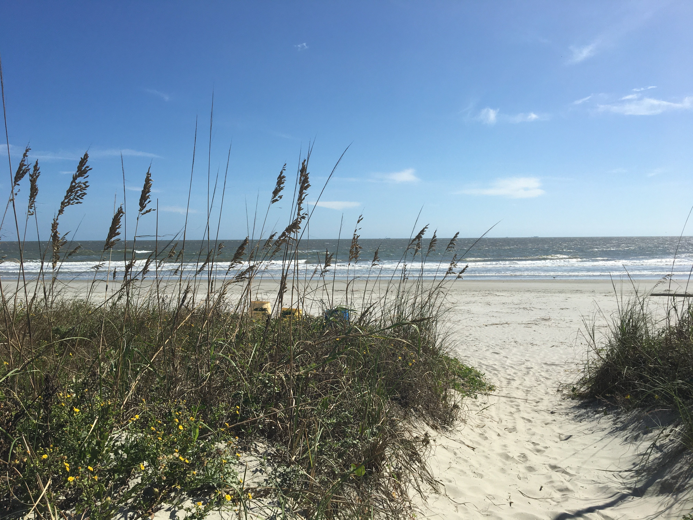

Introduction

Hello! My name is Riley. I am currently a student at the University of South Carolina Aiken studying computer science. I enjoy learning about programming, cybersecurity, and web development. Outside of school, I enjoy playing video games and spending time with friends. I hope to continue improving my programming skills throughout this course.
I chose computer science because I like solving problems and seeing an idea turn into something that works. So far my coursework has covered Java programming, data structures, and the basics of networking and security, and I am now adding HTML and CSS to that list in CSCI225.
My goal after graduation is to work in cybersecurity or software development. In my free time I like to explore new technology, work on small coding projects, and visit the beach, which is why the photo above is one of my favorites. This homepage will grow throughout the semester as I add new assignments and skills.
This page is for CSCI225.
HTML is used to create webpages.
Learning Web Programming is an exciting experience.
Portfolio
-
Java Programs
Created Java applications including calculators, sorting algorithms, and recursion projects.
-
Cybersecurity Labs
Configured firewalls, performed vulnerability scans, and learned network security fundamentals.
-
HTML Website
Designed my first HTML webpage using semantic HTML5 elements.
Assignments
- Assignment 1
- Assignment 2
- Assignment 3
- Assignment 4
- Fill out this form
Schedule
| Course | Days | Time |
|---|---|---|
| CSCI225 | Monday & Wednesday | 12:00 PM - 1:15 PM |
| Art History | Tuesday & Thursday | 10:50 AM - 12:05 PM |
| CSCI220 | Monday & Wednesday | 1:30 PM - 2:45 PM |